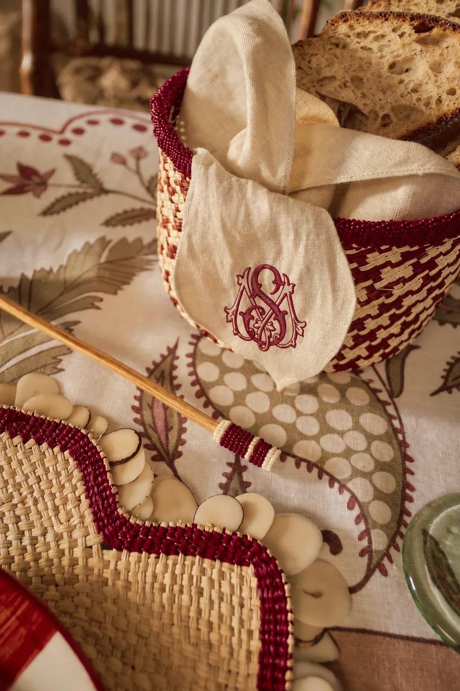
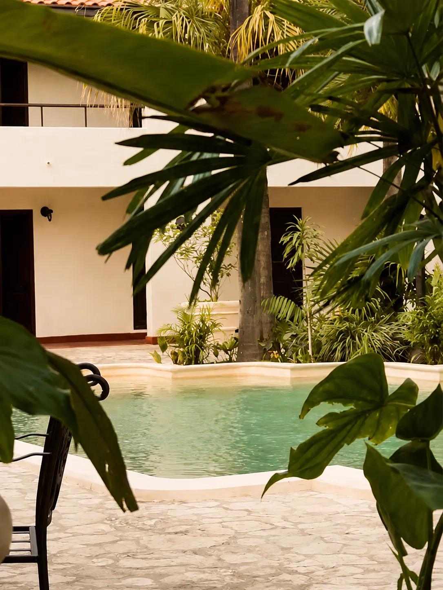
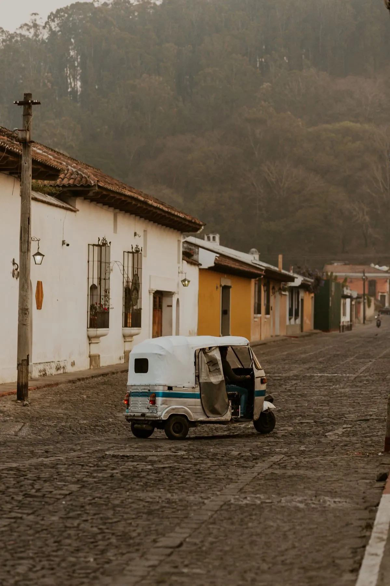

Stay and Travel
I. Accommodation
We recommend staying in or near the town center of Copán Ruinas for easy access to the wedding weekend events. Please contact each hotel directly to reserve and mention the Marsan Soto wedding when booking for a special deal.
Airbnb for Vacation Home Rentals

Vacation rentals are also available through Airbnb in and around Copán Ruinas.
II. Getting Around Copán Ruinas

Copán Ruinas is a walkable town, and tuk-tuks are readily available for short trips between hotels, restaurants and wedding weekend events. Guests may request one directly through their hotel or find them around the town center. You will love it!
III. Transportation to Copán
For guests who need to arrange private transportation to Copán, we recommend contacting DMundo Travel directly:
Contact DMundo Travel
Agent contact: Isabella DMundo Travel // +504 3156-2213
Important note for international guests:Since Copán Ruinas is a few hours from San Pedro Sula, please allow enough travel time before and after the wedding weekend. Depending on your flight schedule, consider an overnight stay in San Pedro Sula.
IV. Flights
We recommend that international guests fly into Ramón Villeda Morales International Airport (SAP) in San Pedro Sula, Honduras.
Flying into San Pedro Sula will make transportation to and from Copán Ruinas easier.